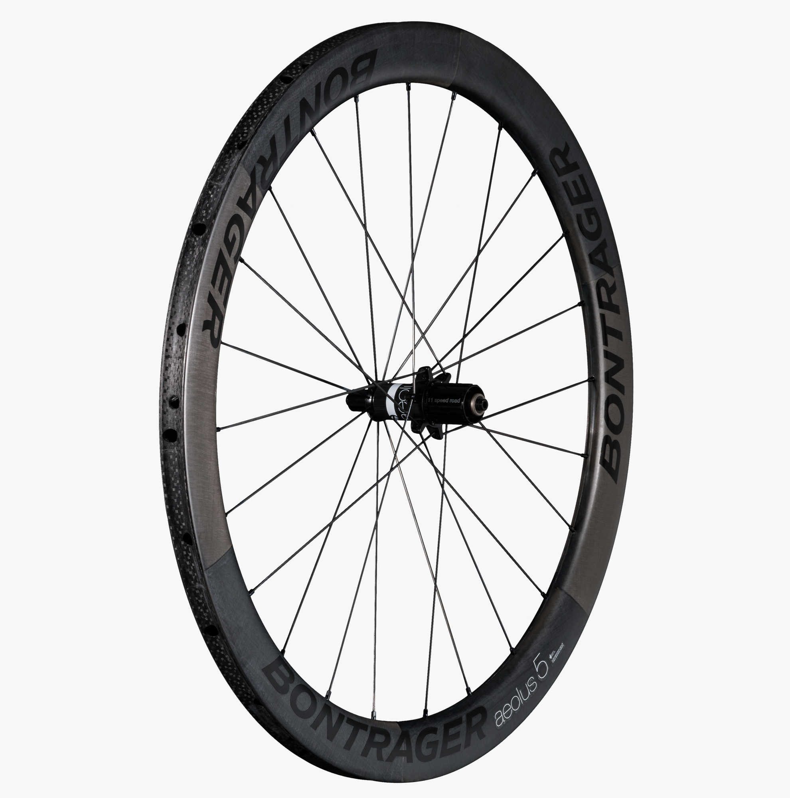
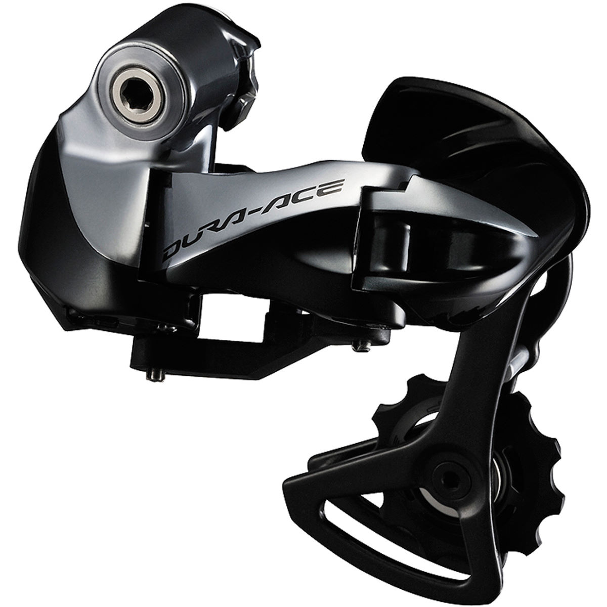
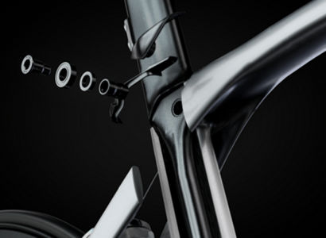

The new 2016 Trek Madone is back and better than ever. Featuring aero tube shaping, an isospeed decoupler and other features to make it a powerful race machine.
The new model year for the Madone brought about plenty of changes. The new tube shaping out of the 600 Series OCLV carbon fiber is strong, compliant and very aerodynamic, giving you the speed and perofrmance you expect out of Trek. Integtration is also huge, brakes, cables and more are tucked away giving the Madone a sleek look and additional aero quaities.
The 9.9 model of the Madone comes from the factory with a Bontrager Aeolus 5 carbon fiber wheelset. These wheels are made in the USA and will give you an aerodynamic advantage over your competition and an excellent ride that is second to none.
Dura-Ace Di2 comes stock as well on the Madone 9.9. With shifting ease, hidden cables and an auto trimming front deraileur, expect your shifting to be easier and more reliable than ever.
Thought the Isospeed Decoupler was only for the Trek Domane and Boone lines? Think again. In 2016, Isospeed has been brought to the Madone, giving the same ride quality and compliance of the Domane, in the integrrated speed machine that is the new Madone.
